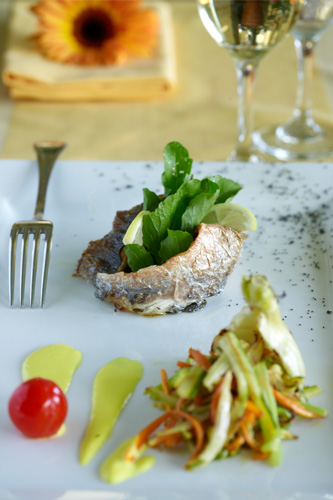
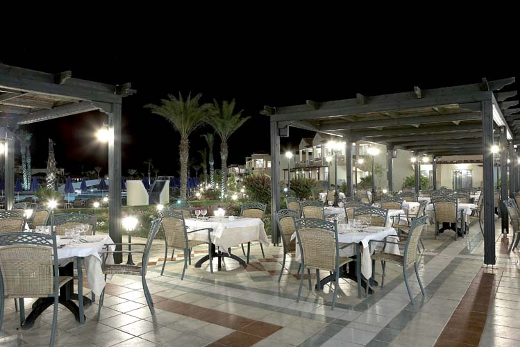
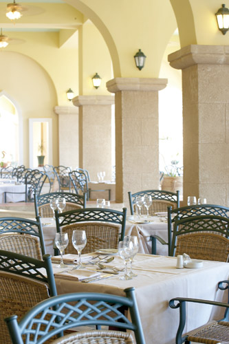
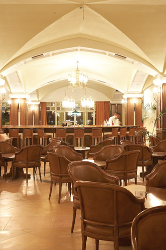

'L’osteria' Restaurant
"No man is lonely while eating spaghetti; it requires too much attention."
- C. Morley -
Whether you are looking for a light refreshing bite, a romantic dinner for two, a family treat or just to
celebrate that special occasion, our Italian restaurant L’osteria offers a truly enjoyable dinner
experience.
With its hearty portions and honest flavors, the kitchen delivers a menu that celebrates the essence of the
finest Italian dishes. And yes, it has a traditional Italian brick oven; ‘’Buon appetito!’
Opening hours: 19.00 to 22.00 pm.
Please note: As a part of the all-inclusive package, you are welcome to dine complimentary once a week in
'Thalassa' or 'L’osteria'.

'Spondi' Main Restaurant
Here at Lindos Princess Beach Hotel we have set our minds to amaze you, and our Main Restaurant ‘Spondi’ is
no
exception. Enthusiastic staff has proudly lined up a number of tempting choices from the Mediterranean &
European cuisine.
Breakfast before 07:00 hrs: Continental breakfast available on request, please contact reception.
Breakfast: 07:00 to 10:00 am. (American buffet style)
Late Breakfast: 10:15 to 11:00 am. (Continental style)
Lunch: 12:30 to 14:30 pm. (Buffet)
Dinner: 18:30 to 21:30 pm. (Buffet)
Please note:
During dinner time a dress code applies (no t-shirts and shorts for men)
No swimming wear allowed
If you have any food allergy or diet requirements please advise Restaurant Manager in advance.
If you are in a larger company (over 15 people) a table reservation is required in advance.
Local wine, draft beer, table water and soft drinks are free of charge. Other beverage from the wine menu
comes
with extra cost.

'Thalassa' Restaurant
Dining in Thalassa guarantees you a true taste of Lindos. Specialized in locally caught seafood, the fresh
menu
is designed to reflect the location.
Composed by the Chef’s secrets, the kitchen delivers the most delicate treasures from the sea with
interesting
flavor combinations.
The restaurant also presents a variety of traditional Greek specialties for you to enjoy the authentic food
of
Rhodes.
Opening hours: 19.00 to 22.00 pm.
Please note: As a part of the all-inclusive package, you are welcome to dine complimentary once a week in
'Thalassa' or 'L’osteria'.

'Dionysos' Main Bar
Dionysos Bar, classy and timeless, has all the beverages required for the skilled staff of our all inclusive
resort to pour, mix, whisk and shake up an extensive range of cocktails and refreshing aperitifs.
Chill out with a glass of the finest local wine accompanied with good conversations. This spacious bar is
perfect for a sundowner at the end of another day under Greek skies.
Opening hrs Monday - Sunday: 18:00 to 01:00 am.